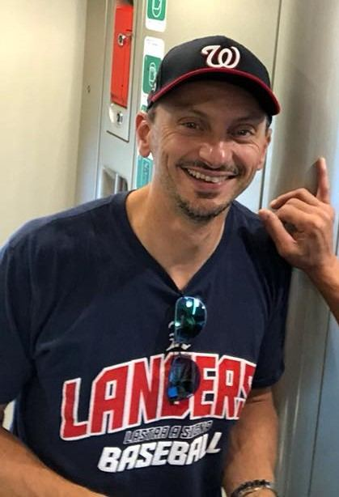
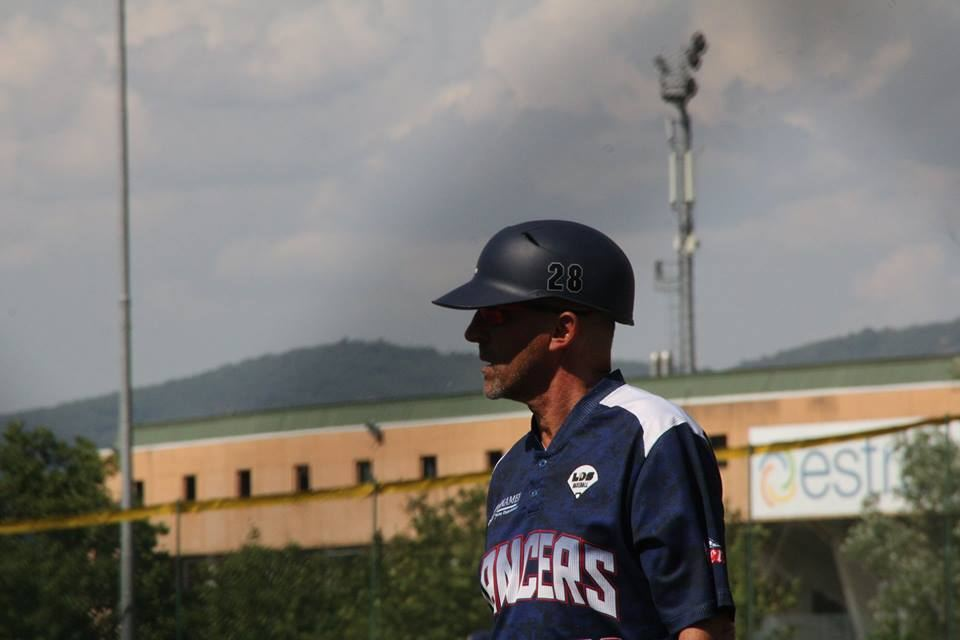

In questo periodo dell’anno, in cui il baseball giocato è fermo, in casa Lancers si lavora senza sosta per allestire le squadre che si presenteranno ai nastri di partenza nella prossima stagione; il DS Ciappi, nello specifico, è in continuo contatto con giocatori e tecnici per organizzare il lavoro che verrà svolto in palestra e sul campo di gioco in questi mesi.
La scorsa settimana abbiamo ufficializzato, e di conseguenza confermato, lo staff tecnico della prima squadra che proseguirà quindi il percorso intrapreso un anno fa; con la stessa logica la società ha trovato l’accordo con Gentini e Manuli che porteranno avanti il lavoro con la Serie C, anch’esso iniziato non più di 12 mesi fa.
Il Consiglio Direttivo si dice molto entusiasta e soddisfatto di questo rinnovo che permetterà ai tanti giovani presenti nel roster di crescere e prepararsi al meglio per affrontare in futuro un campionato superiore.
Riteniamo questa categoria un punto importante e fondamentale del percorso di crescita dei ragazzi del settore giovanile che si trova a misurarsi con un campionato senior supportati da tecnici di ottimo livello e da qualche compagno di squadra più esperto.

La stagione 2018 è terminata in maniera positiva per il team di Gentini e Manuli che ha raggiunto risultati sopra ogni aspettativa; non che mancasse fiducia nei ragazzi o nei tecnici ma era naturale un anno di ambientamento per un gruppo nuovo con tanti giovani.
Nelle diciassette partite di stagione regolare disputate alla fine le vittorie sono state sei a fronte di undici sconfitte, numeri che hanno posizionato la nostra squadra al sesto posto della classifica, al pari con Massa, su un totale di dieci squadre partecipanti.
Sciolto il ghiaccio del primo anno adesso è il momento di alzare l’asticella; lo staff tecnico vuole migliorare i risultati finora ottenuti senza trascurare la crescita dei più giovani.
Ai giocatori è stato chiesto un maggiore impegno durante gli allenamenti anche in previsione di possibili interscambi di giocatori tra le due categorie durante la stagione, gli occhi dei tecnici saranno ben vigili su ogni atleta.
A tal proposito la società è lieta di annunciare che da quest’anno la collaborazione tra le due categorie sarà ancor più intensa grazie all’accordo raggiunto con Barbieri, attuale manager della Serie B, che ha accettato di aiutare Gentini e Manuli negli allenamenti, in particolar modo sulle tecniche difensive, suo cavallo di battaglia.
Un altro tassello che siamo certi porterà questa squadra a togliersi ancor più soddisfazioni.
Non mancano le novità a Lastra a Signa e ben presto vi aggiorneremo sulle categorie giovanili e su, speriamo, qualche bomba di mercato.